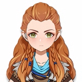

-
Alhaitham (5★)
- Dendro
O atual Escriba da Academia de Sumeru, um homem de grande inteligência e talento. Vive sua vida livre e despreocupado, sendo uma pessoa muito difícil de se encontrar. Academia de Sumeru
-
Aloy (5★)
- Crio
Era uma pária, agora uma caçadora de uma avidez inigualável. Pronta para fazer a coisa certa com seu arco, a qualquer momento. Cavaleiro Errante
-
Diluc (5★)

- Piro
O magnata do império de vinhedos em Mondstadt, inigualável em todos os sentidos. Adega do Alvorecer
-
Kaeya (4★)

- Crio
Um espadachim dos Cavaleiros de Favonius com uma aparência única. Cavaleiros de Favonius
-
Keqing (5★)
- Eletro
A Yuheng dos Qixing de Liyue. Tem muito a dizer sobre o Rex Lapis governando Liyue com apenas uma palavra, mas na verdade, esse deus admira muito esses céticos. Qixing de Liyue
-
Lisa (4★)
- Eletro
Preguiçosa, mas conhecida como bibliotecária dos Cavaleiros de Favonius, na verdade foi considerada pela Academia Sumeru como a mais graduada dos últimos dois séculos. Cavaleiros de Favonius
-
Venti (5★)
- Anemo
Um dos muitos bardos de Mondstadt que vagueia livremente pelas ruas e becos da cidade. Mondstadt
-
Xinyan (4★)
- Piro
A única roqueira do Porto de Liyue, ela usa sua música e canções apaixonadas para resistir aos preconceitos. Corda Vermelha
-
Yelan (5★)
- Hidro
Uma pessoa misteriosa que afirma trabalhar para o Ministério dos Assuntos Civis, mas "não existe" nos registros deles. Casa de Chá Yanshang
-
Zhongli (5★)
- Geo
Um convidado misterioso da Funerária de Wangsheng. É um erudito que tem um profundo conhecimento sobre todos os tipos de coisa. Porto de Liyue